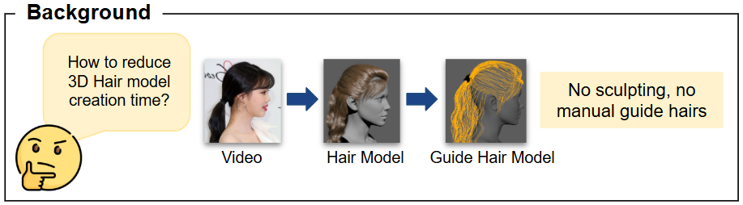
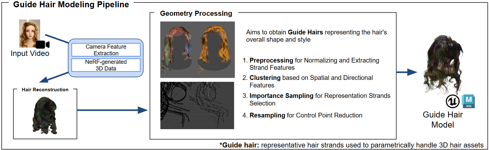
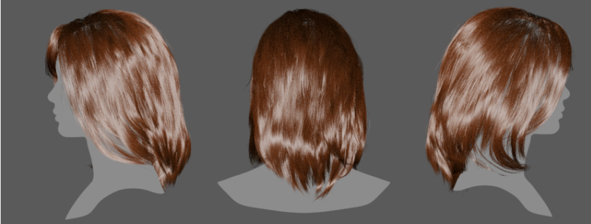
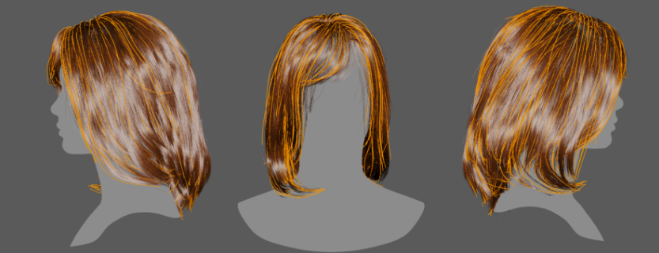

A pilot study on turning high-fidelity hair reconstruction into a production-usable guide-hair pipeline.

This project investigated how to convert high-fidelity 3D hair reconstruction into a representation that artists could actually use for game asset production. Starting from a monocular-video hair reconstruction workflow based on recent research, the system produced dense strand geometry that preserved hairstyle detail well, but the raw output was too heavy and irregular for direct use in Maya or Unreal.
I therefore designed a post-processing pipeline that distilled reconstructed strands into a sparse guide-hair model while preserving the overall silhouette, flow, and style of the original hair.

The front end reconstructed dense 3D hair from video and converted it into strand-level geometry. I then applied geometry processing in four stages: strand cleanup and normalization, feature extraction, clustering by spatial and directional behavior, and representative-strand selection followed by control-point reduction.
In practice, this meant aligning strands into a comparable form, encoding features such as root position, dominant direction, length, and waviness, grouping strands with similar geometric behavior, and selecting representative strands before simplifying them through resampling.
This allowed the final guide set to remain lightweight without collapsing the hairstyle into an over-smoothed approximation.
- Adapted a research-grade monocular hair reconstruction workflow into a production-oriented pipeline for guide-hair generation.
- Designed a geometry-processing stage that combined strand normalization, clustering, representative-strand selection, and resampling to compress dense reconstructions into editable guide sets.
- Reduced strand complexity and control-point count while preserving the major volume, silhouette, and directional structure needed for downstream artist workflows.


This project reframed recent hair reconstruction research as a pipeline design problem rather than a pure reconstruction benchmark. The resulting workflow preserved the major hairstyle shape and directional structure while lowering strand and control-point complexity, making the output more practical as an intermediate asset for grooming and game-character production.
As a pilot study, it established a feasible path from high-fidelity reconstruction to artist-usable guide-hair generation.
For production hair assets, the bottleneck is often not reconstruction fidelity itself, but how effectively dense reconstructed strands can be compressed into a sparse, controllable guide structure without losing silhouette and flow.